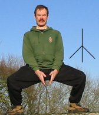

Links
HomeAbout
About Stáv
principles
martial aspects
healing aspects
philosophies
runes
stances
About Ice & Fire
Find Local Clubs
Join
Events
Worldwide Stáv Events
Contact Us
Blogs
Fall '06 Stáv Weekend Blog
Stáv Blog (Miki)
Products
CafePress Shop
Books/Memberships/Etc
Links
Ice and Fire UK
Stáv-International

What is Stáv
The Stances
The Stances form the heart of the Stav system. Even if nothing else in learned, regular practice of the Stances will provide many benefits to the student of Stav.
The Stances are derived from the Runes of the Younger Futhork. All the Runes of the Younger Futhork have one main central stem, which allows the Rune to be shaped using the human body: The torso forms the central stem and the limbs create the other lines.
Each Stance is moved into slowly and deliberately, with particular emphasis on synchronizing movements and breathing patterns. This makes the Stances into a powerful moving-meditation.
When gone into slowly and deliberately with emphasis on synchronising breathing with movements, the Stance provide a moving-meditation, and is a very powerful way of working with the Runes.
Benefits of the Stances
The benefits from the Stances are derived from correct, regular and long-term practice. Just going through the motions, or doing them once or twice a week, will not produce any lasting results.
Breathing is of paramount importance with the Stances and is abdominal, or diaphragm, breathing. This allows for much fuller, deeper breaths that will oxygenate your blood more fully and with less effort.
Abdominal breathing is a much more deliberate, conscious form of breathing that promotes a relaxed state of mind. This can be utilized at any time, not just when doing the Stances, to allow us more control of our bodily functions and mental activities.
The Stances also promote balance and correct posture. Many people don't hold their body correctly, which results in aches and strained muscles. The Stances gently ease you into the correct posture by relaxing your body so that it is able to move and hold itself properly. Through regular practice, the Stances will correct your posture and spinal alignment on a permanent basis so you will always hold yourself correctly even when you are not thinking about it.
As well as balance and posture, the Stances help your body by gently stretching and toning the whole of it. Different Stances put emphasis on different muscles, joints and tendons, allowing them all to be worked on and easing them into full flexibility and mobility. By doing the Stances correctly and patiently, you will gradually overcome any stiffness and inflexibility you have and will emerge healthier and fitter than you started.
Some Sample Stances
|  |  |
 |
 |